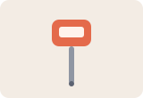
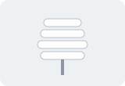

Cool roofs: a ten-year field comparison
Varga, E. · Journal of Example Climate · 2022
Sandbox · Synthetic links only
A page built for trying Link Meteor. Every link below is made up: they point to reserved example domains, back to this page, or to doi.org with the 10.5555 test prefix, which matches no real paper. Nothing here tracks you.
journal.example.org · Reading list
A full drag selects 7 links. One is an image with no anchor text, two share a destination, and two different destinations are both labeled “Download PDF”.
search.example.net · Search results
A full drag selects 9 links: a title, a PDF and a “Cited by” link for each result. The “Cited by” links point back to this page, so they count as internal links.
Varga, E. · Journal of Example Climate · 2022
Mensah, K. & Duarte, L. · Example Buildings Review · 2019
Ivanova, S. · Example Urban Studies · 2018
desk.example.com · Research Ops queue
A full drag selects 10 links: five ticket links and five email links. Anchor text stays the ticket ID, never the ticket's title.
shop.example.org · Field equipment
A full drag selects 12 links. Each product has an image link (no anchor text, labeled by its alt text), a name link and a “Details” link. All four “Details” links share a label but go to different pages.

Probe thermometer−40 to 125 °CDetails
Radiation sun shieldFor sensor housingsDetailsexample.org · Edge cases
A full drag selects 7 links. The script link and the hidden link are not links Link Meteor captures. Hidden text inside the last link is left out of its anchor text.
archive.example.org · Scrolling box
This box scrolls. Start a drag inside it and use your scroll wheel, or drag to its bottom edge: all 15 links can be selected in one go.
This site · Embedded frame
The frame below comes from this same site, so its 3 links can be captured. Frames from other sites can't be read, and captures say so.
This site · Components and late content
Two links live inside a web component's open shadow root. Press the button to load three more; a drag afterwards selects all 5 links.